Hardware Implementado
Descripción general
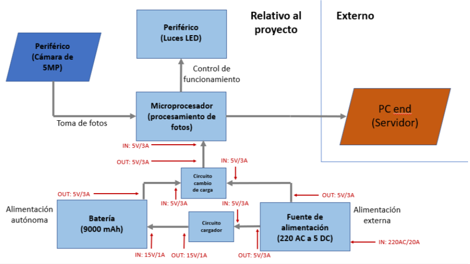Circuito general: Fuente de alimentación
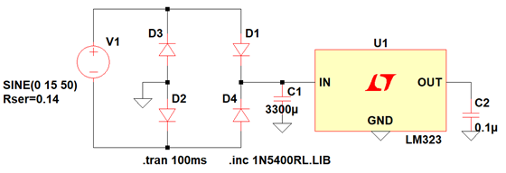Transformador
El transformador usado es de 220:10 y 70 VA.
Para determinar el modelo del secundario es necesario hacer dos cálculos. El primero es el voltaje peak alcanzado:
Vpeak = 10×√2 = 14,1 Vac
Considerar además tensión en el vacío:
Vfinal = 14,1×1,06 = 15 Vac
Para la corriente en el transformador:
IT = 70/10 = 7A
Para la resistencia en serie equivalente de secundario:
R
Finalmente, se obtiene el secundario modelado con los valores obtenidos anteriormente.
Rectificación y Filtrado
Importancia en estas dos partes es la elección del diodo y el valor del capacitor. Como primera aproximación se usó diodo 1N5400 y capacitor de 3300 uF.
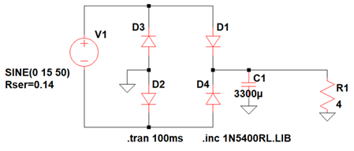Con esto se puede obtener un gráfico de tensión previo a la rectificación.
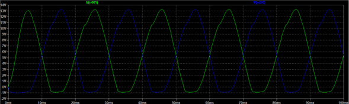También se puede obtener un nuevo gráfico con corriente circulando por los diodos y el voltaje después del filtrado.
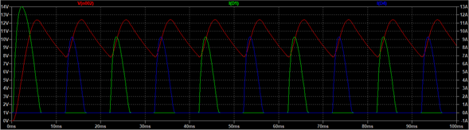Verificación diodos etapa rectificadora
Verificar corriente peak, y periodo y tiempo de conducción en un diodo.
ID = (9,28 A×4,6 ms)/(20 ms) = 2,13 AID = 2,13 A < 3 A
Regulador
Regulador elegido: LM323. Entrega 5V a 3A la salida. Uso de capacitor recomendado en hoja de datos: 0,1 uF.
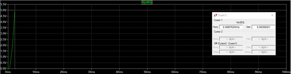Otros cálculos fuente de alimentación
• Disipación de potencia en diodos (7,68 W).
• Tensión inversa del diodo (< 50).
• Fusible de entrada (300 mA). Es necesario saber potencia disipada por diodos, la potencia disipada por el regulador, y la potencia entregada a la salida.
Batería
- Batería li-on
- Capacidad 10000mAH
- Voltaje 3.7 [V]
Requerimientos:
-Raspberry ≈ 26 W 5200mAH
Boost Converter
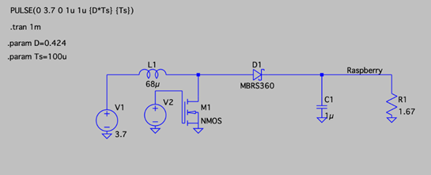
- Voltaje de entrada (3.6[V] - 3.9[V])
- Volatje de salida (5 [V])
- Corriente de salida (3 [A])
1. Ciclo de trabajo
Eficiencia al 80% -> Disipación de energía
Ciclo del trabajo < 0.5 ∴ R1 ≈ 0
2. Cambio de corriente
Iripple ≈ 0.4×Iout
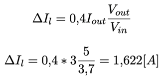3. Inductancia
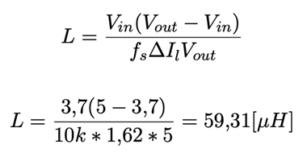4. Voltaje de ripple del condensador
ESR es la resistencia interna del condensador
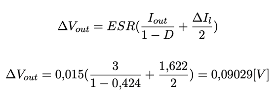5. Condensador
C = 1[μH]
Condensador cerámico
- Voltajes pequeños
- Frecuencias relativamente altas
6. Diodo Schottky
- Ipico alta
-Más rápido ∴ más eficiente
7. Mosfet N
IRF-7XX N-Channel Power Mosfet
IRF-740 cumple con ID = 10[A] y Vds = 100[V ]
8. Simulación
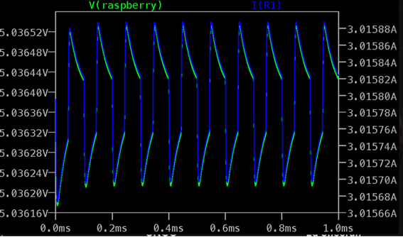Cambio de fuente de energía
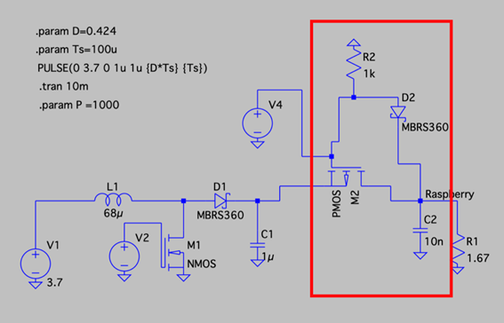
1) Condensador de desacoplo -> C=10[nF]
2) Resistencia de pull-down -> R=1[KΩ]
3) Mosfet P
IRF-9xxx P-Channel Power Mosfet.
IRF-9540 cumple con ID = −19[A] y Vds = −100[V ]
4) Diodo Schottky
5) Simulación